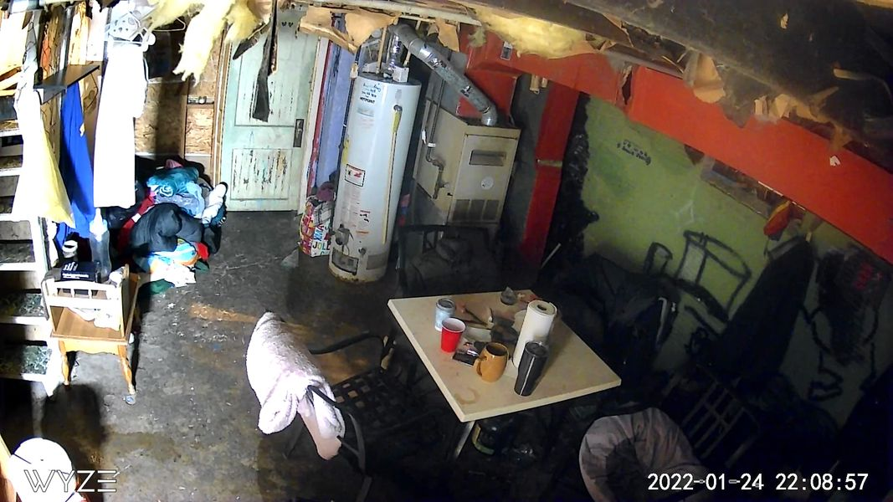

Mobile uploads
Here's a picture of our rag-tag warming center taken one minute ago. I called to our house phone and said we will be closed tonight until 9am tomorrow morning. And do you what happened? Everyone left. I didn't need a guy with a gun. I didn't need to yell. I didn't even need to be there.
Homeless people are not savage wild animals. If anything, they are incredibly grateful for anything offered to them.
Our societal understanding of these people is so twisted and misinformed.